A workout planner that shows its working.
Grasp plans your session around your goal and your gym, works out the weights from what you actually lifted last time, and tells you why it picked each one.
Speaks 15 languages
The screens, the exercise names and their step-by-step instructions, not just the menus. Arabic reads right to left, the way it should.
 English
English العربية
العربية- Français
 Deutsch
Deutsch Español
Español Italiano
Italiano Türkçe
Türkçe Polski
Polski- Русский
 हिन्दी
हिन्दी 中文
中文 한국어
한국어 日本語
日本語 Bahasa Indonesia
Bahasa Indonesia Português
Português
Your next workout, built for you
Tell it your goal, how many days you train, how long a session is and what equipment you can actually reach. It will never suggest a movement you cannot do. Save a setup for every place you train, and switching gyms rebuilds today's session.
Tick what you have. It plans with nothing else.
A few dumbbells at home, a full rack at the gym, a band in a hotel room: save a setup for each place and switch in one tap. Grasp only plans exercises you can do with what is ticked, and rebuilds today's session when you switch.
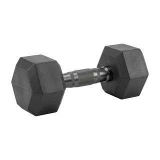
Dumbbells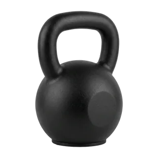
Kettlebell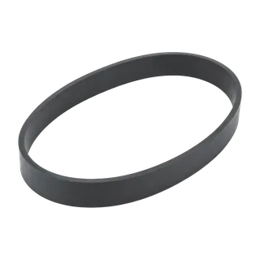
Resistance band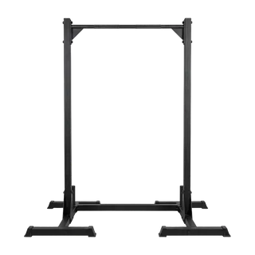
Pull-up bar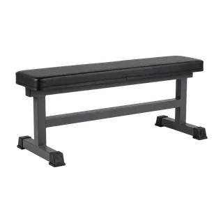
Flat bench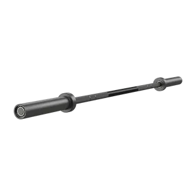
Barbell- Cable machine
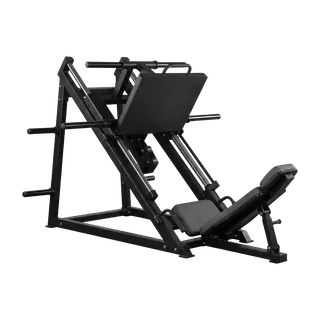
Leg press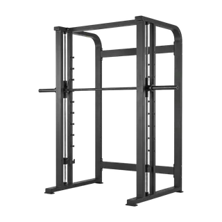
Smith machine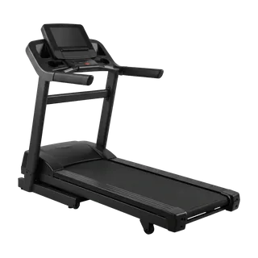
Treadmill
Every weight comes with a reason
Most training apps hand you a number and leave you to trust it. Grasp shows the reasoning, and lets you disagree in one tap.
Every set reached the top of your range — up 5 kg.
↑ 5 kgHit the top of your rep range on every set and the weight goes up; miss it twice and it comes down. Five kilograms here because that is the smallest step the machine's stack has. Warm-up sets are worked out from your working weight, and the rest timer starts itself.
See what needs rest
A body map shades each muscle by how recently you worked it, so a week of training reads at a glance instead of needing to be added up. Muscles fade as they recover.
Weekly targets, per muscle group
Sets are counted against a weekly target for each muscle group, and you can change the target. You can see where the week's effort went, and what is still short.
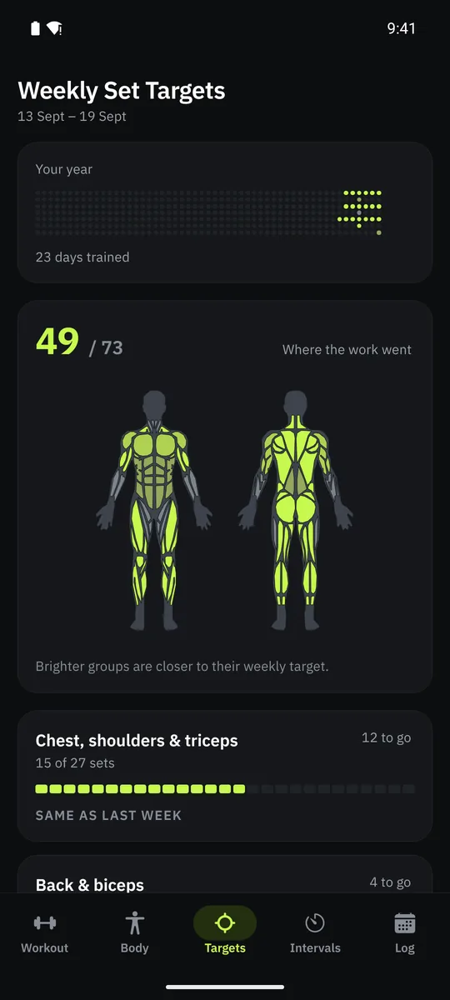
Intervals for anything in rounds
Rope, sprints, planks: work and rest, counted for you, with a sound at every change so you can put the phone down. Save your own presets. Between sets, the rest timer rings and counts down in the notification shade.
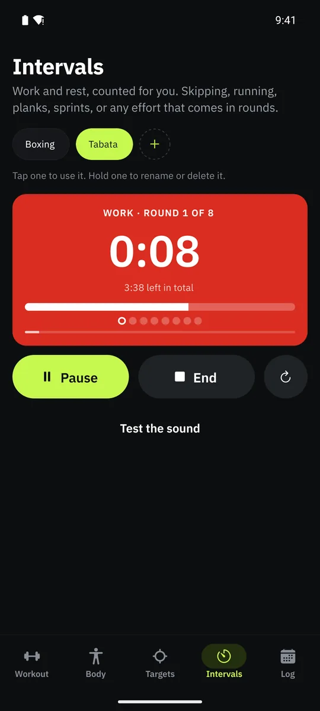
Every session, on the calendar
Everything lives on your phone and works with no signal. An account only backs your training up so it survives a lost phone. Export everything as a spreadsheet or a complete backup whenever you want. It is your training, in a format you can open.
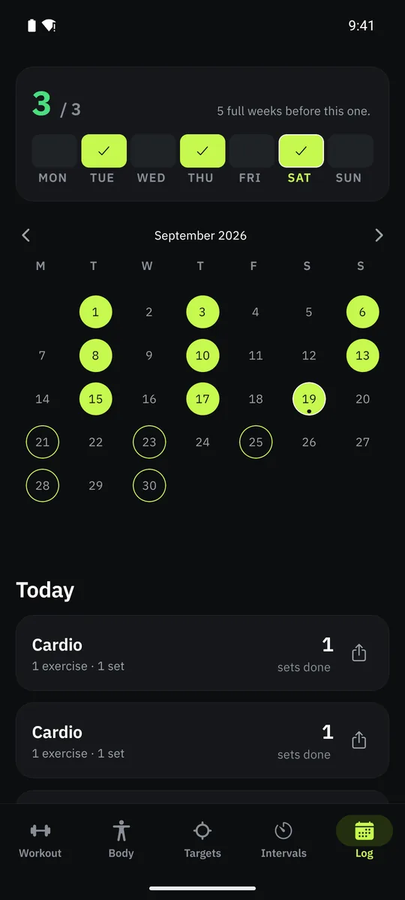
Not an AI
There is no language model deciding what you lift. Grasp's planning is ordinary, inspectable arithmetic: volume targets per muscle, a fatigue model based on what you logged, and a progression rule that fits in a sentence.
A system that guesses cannot tell you why it guessed, cannot be checked, and cannot run on a phone with no signal. This one can do all three.
Get Grasp
Free on iPhone. No ads, no subscription, nothing to unlock.